Labs, Centers, and Organizations
Resources for Starting and Sustaining Digital Humanities Centers
The International Directory of Digital Humanities Centers at centerNet
UCLA CDH Digital Humanities programs and organizations
Organizations
CNI - Coalition for Networked Learning
NITLE - National Institute for Technology in Education
ADHO - Alliance of Digital Humanities Organizations
ACH - Association for Computers and the Humanities
centerNet - International network of Digital Humanities Centers
HASTAC - Humanities, Arts, Science and Technology Alliance and Collaboratory
CSDH / SCHN - Canadian Society for the Digital Humanities
Stanford
Stanford CESTA lab images (Center for Textual and Spatial Analysis)
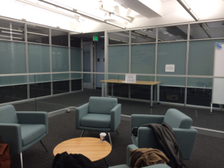 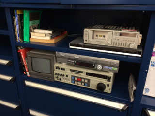 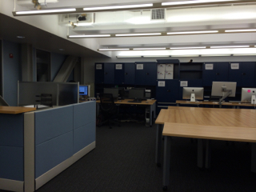 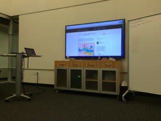 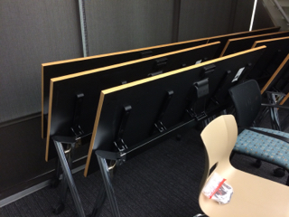 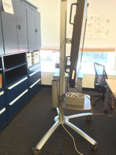 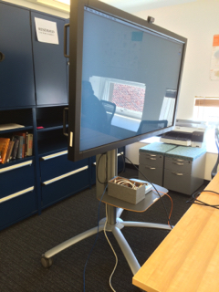 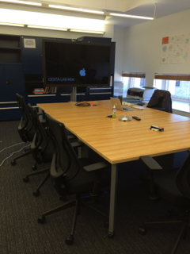{kind=link}
{kind=link}
{kind=link}
{kind=link}
{kind=link}
{kind=link}
{kind=link}
{kind=link}
University of Maryland
MITH - Maryland Institute for Technology in the Humanities
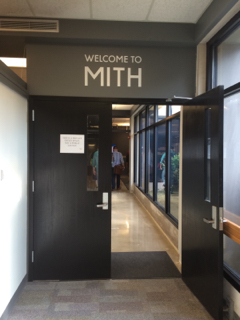 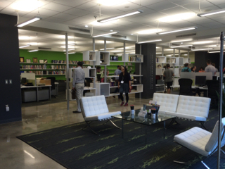 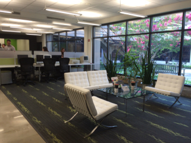 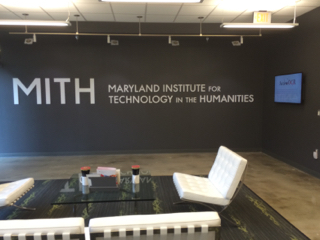 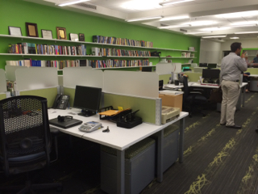 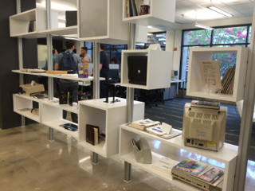 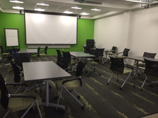 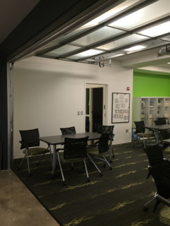{kind=link}
{kind=link}
{kind=link}
{kind=link}
{kind=link}
{kind=link}
{kind=link}
{kind=link}
University of Nebraska-Lincoln
Center for Digital Research in the Humanities
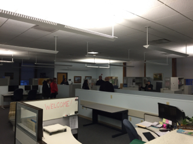 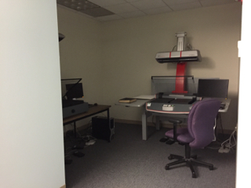{kind=link}
{kind=link}
North Carolina State University
University of Delaware
Interdisciplinary Humanities Research Center
Columbia University
Columbia Digital Humanities Center
Studio@Butler: A Collaboratory for Educators, Scholars, and Librarians
University of Wisconsin-Madison
Emory University
Emory Center for Digital Scholarship
CNI: Using the Amazon Cloud to Host Digital Scholarship Projects from CNI Vimeo Channel.
UC Berkeley
Berkeley Digital Humanities Working Group
UC Davis
The DH Initiative at the Davis Humanities Institute (DHI2)
UCLA
CDH - Center for Digital Humanities
Institute for Digital Research and Education
Brown University
McMaster University
Sherman Centre for Digital Scholarship
Bard College
Experimental Humanities initiative
Press release on Bard College Mellon Foundation grant
University of Connecticut
George Mason University
Roy Rosenzweig Center for History and New Media
University of Virginia Library
Institute for Advanced Technology in the Humanities
University of Oregon
Hamilton College
University of Notre Dame
Center for Digital Scholarship, Hesburgh Library
Penn State University
University of Richmond
Digital Scholarship Lab, Boatwright Memorial Library
Project: Atlas of the Historical Geography of the United States
Trinity College Dublin
Digital Humanities - Research Priority Themes
University of Alberta
Canadian Institute for Research in Computing and the Arts
Case Western Reserve University
The Freedman Center for Digital Scholarship
University of Illinois at Urbana-Champagne
Harvard
Bucknell
The Graduate Center, CUNY
Haverford College
Digital Scholarship - Haverford Libraries
University College London
UCL Centre for Digital Humanities